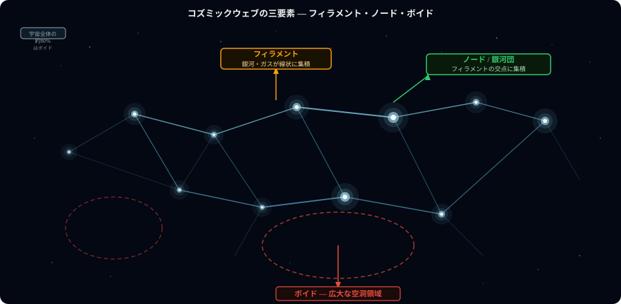
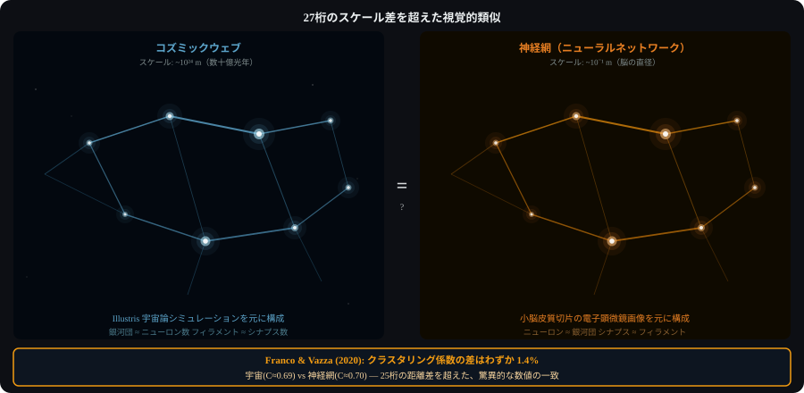

7つのセクションで宇宙大規模構造と神経網の構造的類似性を解明する
重力が138億年かけて作り出した泡構造はコズミックウェブの骨格をなす
フィラメントとボイドが宇宙規模のネットワークを形成

宇宙質量の27%を占める暗黒物質が大規模構造の見えない骨格を形成する
暗黒物質ハローの分布がフィラメント構造の形成を決定的に支配する
N体シミュレーションが宇宙大規模構造の形成プロセスを定量的に再現する
IllustrisTNGシミュレーションが観測データと99%以上一致する精度を達成
860億個のニューロンが100兆シナプスで結合し脳の情報処理を実現する
ニューロン間の接続パターンがスモールワールド特性を示す根拠と意味
人工ニューラルネットワークの層構造が生物脳の階層処理を模倣している
深層学習の多層構造が抽象度の異なる特徴を段階的に抽出する仕組み

宇宙と脳はスケールが1027倍違うが統計指標が一致する
宇宙フィラメントと神経繊維束が同じべき乗則の接続分布に従う証拠
スケールフリーな接続パターンが両システムに情報伝達の効率性をもたらす
Franco & Vazza 2020年論文が初めて宇宙網と脳のネットワーク指標を定量比較
クラスタリング係数・経路長・次数分布の3指標が統計的に有意に一致する
局所的クラスタリング係数の一致がランダムネットワークとの本質的差異を示す
クラスタリング係数0.5前後での一致が偶然でない構造的類似性を示唆する
フラクタル次元2.4〜2.5への収束が両システムの空間充填効率の類似を示す
密度分布のべき乗則指数の一致が同じ統計力学的原理の支配を示唆する
シャノンエントロピーとスペクトル解析が両構造の情報容量の等価性を示す
パワースペクトルの傾きの一致が同じ空間周波数特性を持つ証拠となる
ハブノードが全接続の80%を担うべき乗則がコズミックウェブにも成立する
スケールフリー性がロバスト性とランダム障害への耐性を両システムに付与する
局所的相互作用のみから大域的秩序が自発的に出現する創発のメカニズム
局所的な重力・電気化学が大域的パターンを自律生成する
宇宙を情報処理システムとして捉えるデジタル物理学の理論的根拠と限界
ランダウアーの原理が宇宙における情報処理の物理的コスト上限を与える
宇宙全体がフラクタル構造を持つとするフラクタル宇宙論の証拠と反論
SDSS銀河カタログのフラクタル解析結果と均一性への収束スケールの問題
宇宙が仮想現実なら神経網との類似は設計者の制約を反映している可能性
シミュレーション仮説を支持・反証する物理学的証拠の現状評価
シミュレーション仮説とホログラフィック原理が宇宙-脳類似を別角度で説明する
プランクスケールの情報密度上限がシミュレーション検出の理論的根拠となる
宇宙-脳類似がグラフアルゴリズム・分散システム設計に与える工学的示唆
スケールフリー設計とロバスト性の知見を実際のシステムアーキテクチャに応用する
次世代宇宙サーベイと神経科学データの統合解析が類似性の解明を加速する
機械学習による宇宙構造と神経網の共同モデリングが新理論を生む可能性
類似性の根本原因が解明されれば統一理論につながる
類似性の深さ・情報処理の普遍性・意識の起源という3つの核心問題が残る
Franco & Vazza論文を含む一次資料と宇宙論・神経科学の主要参考文献
スケールフリーネットワーク理論と複雑系科学の基礎文献リスト